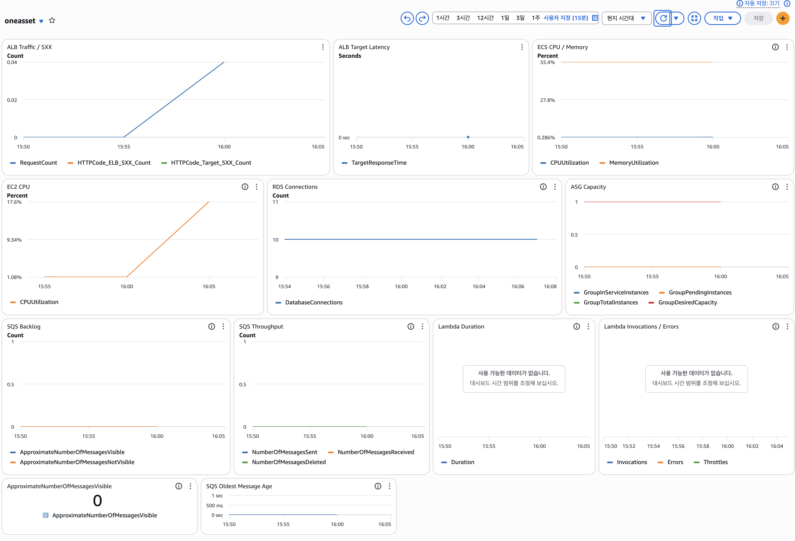
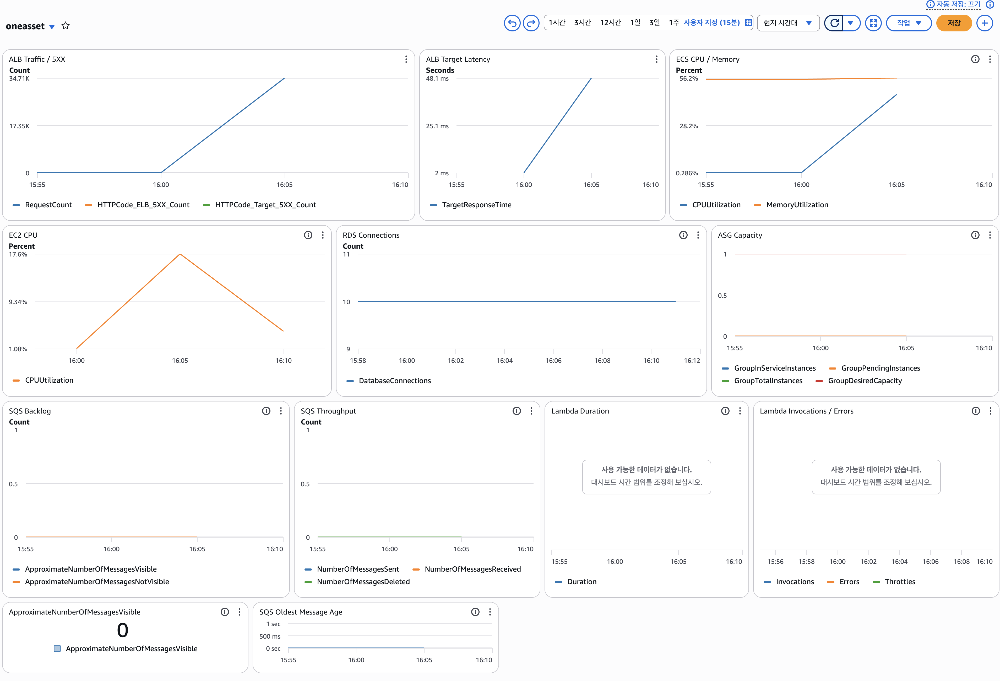
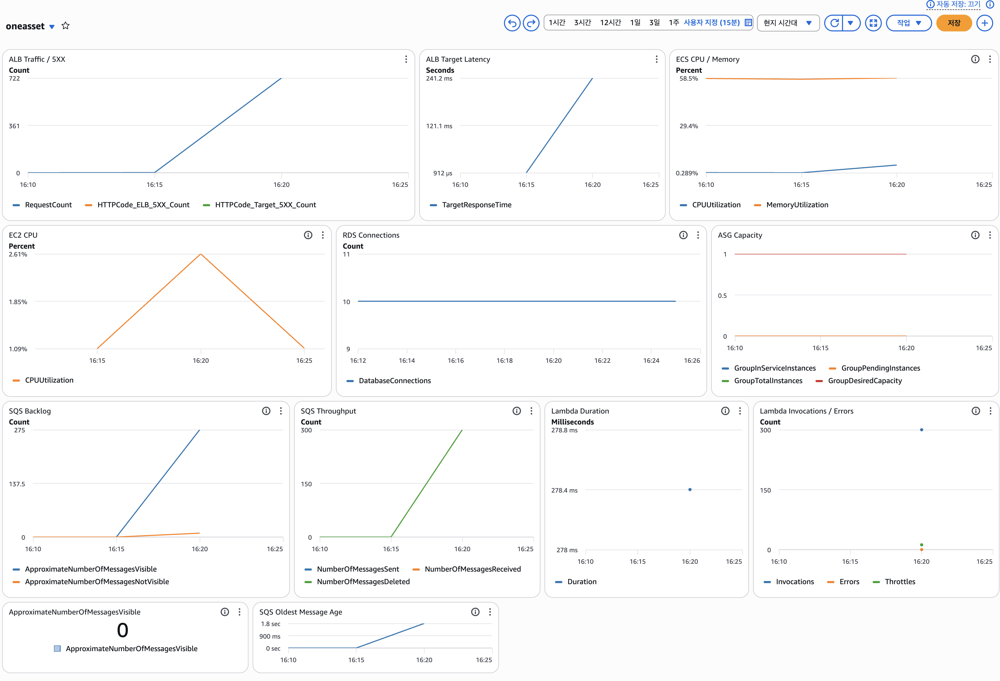
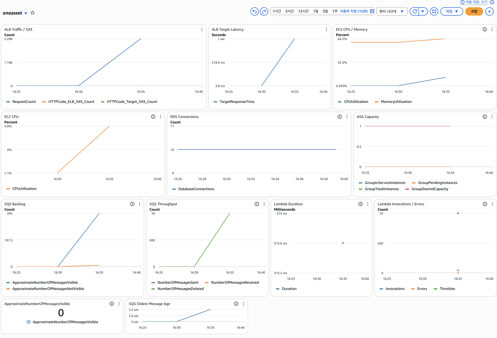

요청량이 늘 때 후처리가 늦어지는 구간을 찾았습니다




사용자가 기다리는 시간은 업로드 API 응답과 이미지가 READY 상태가 되는 시간으로 나뉩니다. 조회 요청과 비동기 업로드를 따로 테스트해 API 서버와 후처리 파이프라인 가운데 어느 구간이 대기 시간을 늘리는지 비교했습니다.
조회 부하 테스트
Cloudflare, ALB, ECS on EC2, Spring Boot, RDS로 이어지는 API read path를 검증했습니다. 동일 프로젝트의 에셋 목록조회 요청을 단계적으로 증가시켜 API 계층의 안정성을 확인했습니다.
비동기 업로드
Spring upload, S3 original object, RDS PROCESSING, SQS, Lambda, S3 variant, Spring callback, RDS READY로 이어지는 비동기 파이프라인을 검증했습니다.
| Scenario | Core Result | Observation |
|---|---|---|
| 01 Smoke | 46 requests, failure rate 0%, p95 237ms | 배포 상태와 API Key 인증 경로 점검 |
| 02 Read Baseline | 1,676 requests, failure rate 0%, p95 169ms | 읽기 API 지연 시간 기준선 확보 |
| 03 Upload Pipeline | 20 uploads, READY success 100%, READY p95 4.22s | 업로드부터 READY까지 상태 전이 점검 |
| 04 Small Spike | 2,105 requests, failure rate 0%, p95 192ms | 50 VU 급증 구간에서도 오류 없이 처리 |
| 05 API Stress | 34,708 requests, failure rate 0%, p95 414.77ms, p99 723.49ms | API read path는 실패 없이 안정적으로 동작했습니다. |
| 06 Upload Burst / 300 | 300 uploads, upload success 100%, READY p95 15.03s, DLQ 0 | SQS backlog peak 약 275로 후처리 적체 관찰 |
| 06 Upload Burst / 1000 | 1,000 uploads, upload success 100%, API p95 4.49s, READY p95 30.10s | 요청 성공률은 유지됐지만 READY 대기 시간 증가 |
업로드 요청은 모두 성공했지만 요청량이 커질수록 READY 전환 시간이 15.03초에서 30.10초로 늘었습니다. API 응답보다 SQS와 Lambda의 후처리량이 사용자의 완료 대기 시간을 결정한다는 사실을 확인했습니다. 다음 개선 대상은 API 서버가 아니라 큐 적체와 Lambda 처리량입니다.